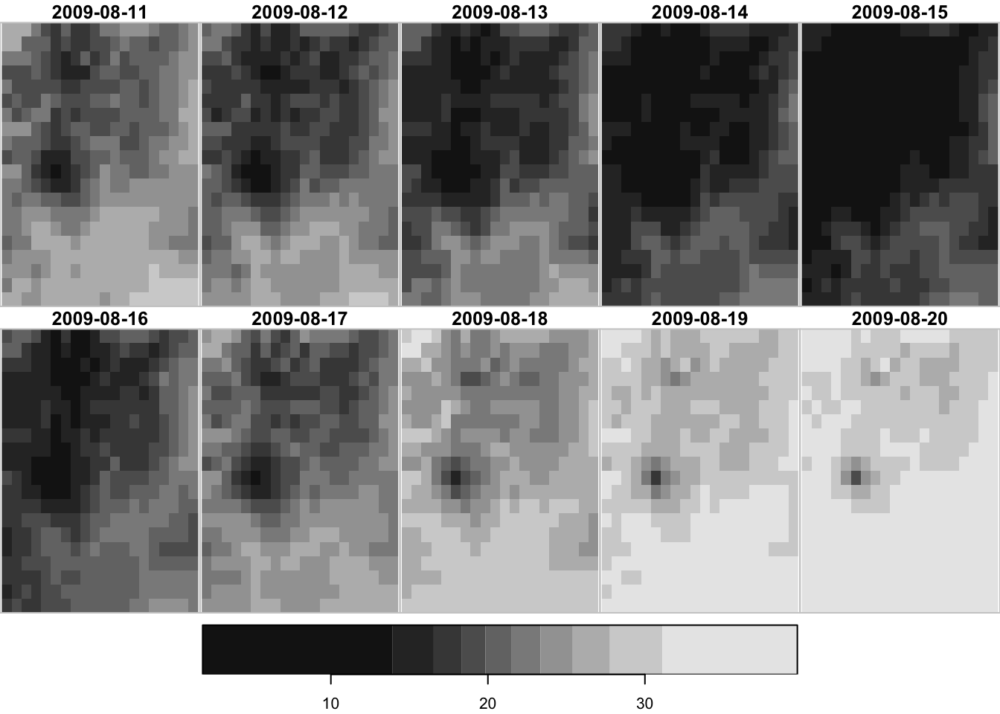
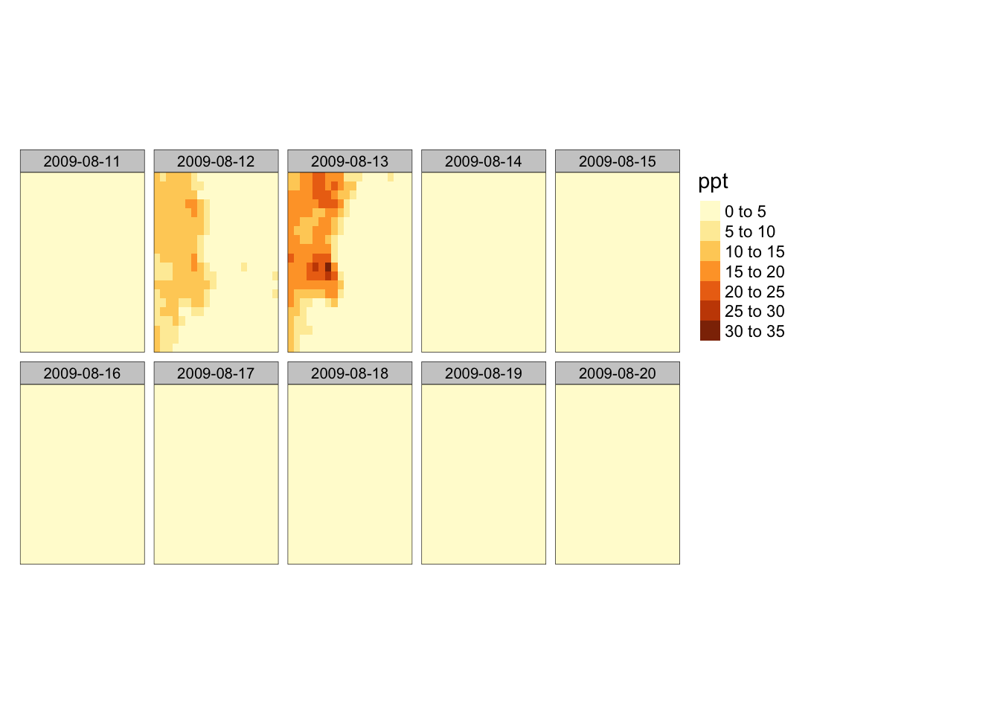

7.3 Quick visualization for exploration
You can use tmap::qtm() to have a quick static map and mapview() or the tmap::tmap_leaflet() package for interactive views.
7.3.1 quick static map

It gives you an error if you try to plot a stars object with multiple attributes:
Error in `[.data.frame`(as.data.frame(shp), shpnames): undefined columns selected, which is identical with this:

7.3.2 interactive map
mapview approach
You can use mapview() from the mapview package to create an interactive map.
Unfortunately, it does not map multiple layers on the same map even though you can select the band to plot with the band option. One thing you can do is to convert a stars to a Raster\(^*\) object first and then apply mapview() to it.
Note that the data values are lost and the layers are now named layer.1 through layer.10. This is because the value of the third dimension (date) is lost in the process of the conversion.
tmap approach
Alternatively, you can use the tmap package. You can apply tmap_leaflet() to a static tmap object to make it an interactive map. The tm_facets(as.layers = TRUE) option stacks all the layers in a single map.